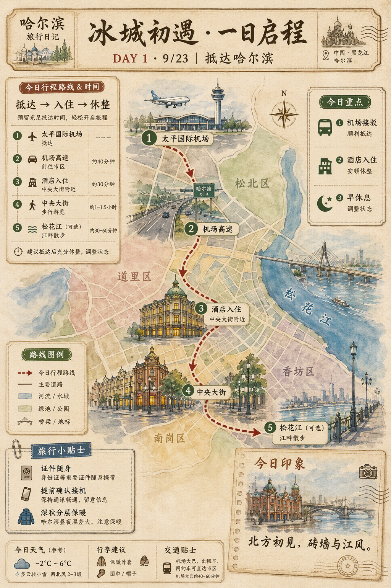
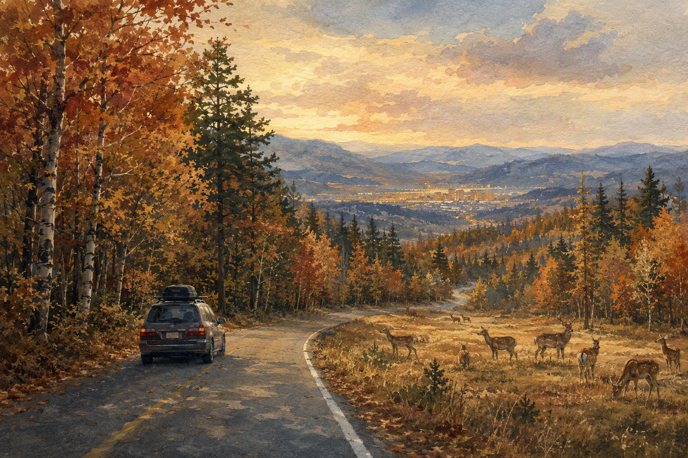
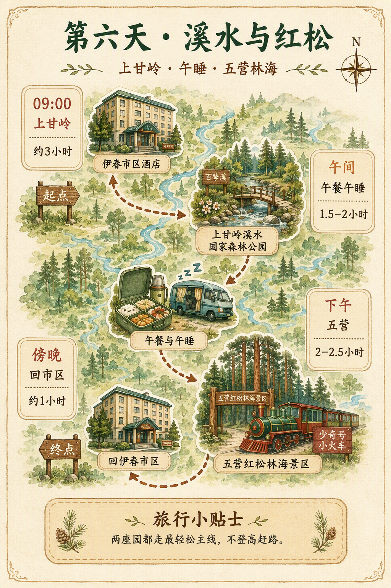
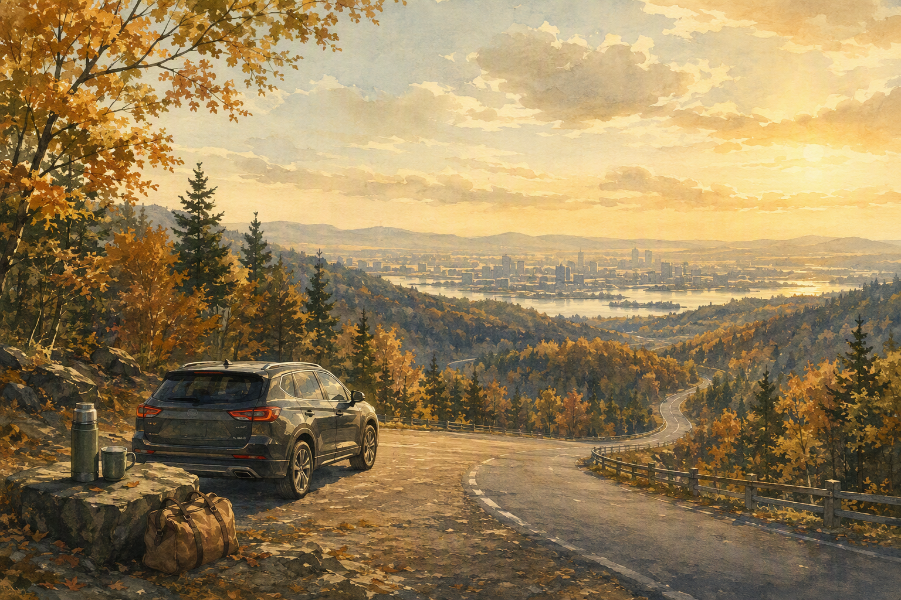

D1 · 9/23
抵达哈尔滨
深圳与长沙的家人在北方相聚。第一天不赶景点，把时间留给抵达、入住和一顿热乎晚餐。

第二程 · 行程草案
九月末，从冰城的街道一路向北，去红松林、花岗岩与小兴安岭的秋天。

内容待确认。 2026年9月23日至10月1日，9天8晚。前四晚住在哈尔滨，随后伊春市区连住三晚：入城日顺路看乌带公路与金山鹿苑；两天分别走上甘岭＋五营、汤旺河北线；9月30日从市区直接回哈尔滨，留一晚从容衔接次日返程。
这一次从哈尔滨出发，但不把行程停在城市。前半程用熟悉而舒缓的节奏看建筑、东北虎与伏尔加庄园；后半程以伊春市区为唯一住宿基地。入城当天顺路经过乌带公路与金山鹿苑；随后向北依次看上甘岭溪水、五营红松林与汤旺河花岗岩森林。全程以少换酒店、一天一件主事、午间可休息为原则：孩子有余裕，老人不赶路，大人也能真正看见秋天。
旅行总览 · 地标与美食地图

路线总览
去程直抵哈尔滨；进入伊春时把南部的乌带公路与金山鹿苑一次串完，再在市区连续住三晚。北线三座森林公园按距离安排：上甘岭与五营同一天，最远的汤旺河独立一天，避免每天换酒店和折返收行李。
行程总览 · 2026年9月23日—10月1日
| 日期 | 上午 | 下午 | 晚上 | 备选 / 提醒 |
|---|---|---|---|---|
| 周三9/23 · D1 | 深圳、长沙分别出发 · 抵达哈尔滨 | 酒店入住 · 休息恢复 | 附近轻松晚餐 · 早睡 | 酒店周边散步 |
| 周四9/24 · D2 | 索菲亚教堂（1.5h）· 中央大街（1.5h） | 防洪纪念塔/江边（1h）· 中华巴洛克（1.5h） | 老道外东北菜 · 巴洛克夜景 | 酒店休息 |
| 周五9/25 · D3 | 东北虎林园（1–1.5h） | 梦幻冰雪馆（1.5–2h，待确认开放） | 松北晚餐 · 江北夜景 | 哈尔滨大剧院（0.5–1h） |
| 周六9/26 · D4 | 哈尔滨极地公园（3h） | 极地公园下午场（2–3h） | 松花江索道返程（约 0.5h） | 太阳岛（1–1.5h） |
| 周日9/27 · D5 | 哈尔滨出发 · 乌带公路车游 | 金山鹿苑（约1–1.5h）→ 伊春市区入住 | 市区晚餐 · 早睡 | 路况紧张则缩短乌带，只保留鹿苑 |
| 周一9/28 · D6 | 上甘岭溪水国家森林公园 | 五营红松林海景区 → 蓝莓采摘（条件性备选） | 回伊春市区 | 不回市区午睡；采摘仅限五营周边当日有果、可接待时短停 |
| 周二9/29 · D7 | 10:00 伊春市区出发 → 汤旺河林海奇石 | 短栈道、远眺石林与精华奇石分段游览 | 回伊春市区最后一晚 | 最远的一天，只走汤旺河；按体力选 2–3 段 |
| 周三9/30 · D8 | 伊春市区 → 哈尔滨 → 酒店入住 | 司机去机场还车／还安全座椅 | 哈尔滨最后一晚 | 若时间、体力与开放允许，四个备选中只选其一 |
| 周四10/1 · D9 | 早餐 · 整理行李 | 前往机场 | 飞回家 | 不安排额外景点 |
每日行程 · 确认版
深圳与长沙的家人在北方相聚。第一天不赶景点，把时间留给抵达、入住和一顿热乎晚餐。

上午晚一点出发；咘咘午睡后，再从道里走向道外。全程按片区推进，不来回折返。

本日景点介绍
圣·索菲亚教堂位于哈尔滨道里区，是一座以红砖墙体、绿色穹顶和拜占庭式构图著称的原东正教教堂建筑。它所在的区域曾是近代哈尔滨俄侨活动集中的城市空间之一，因此不仅是一处拍照地标，也是一段中东铁路时期城市发展史的实物见证。爷爷奶奶到这里可重点看看穹顶、钟楼和红砖砌筑细节；广场较平坦，适合慢走和休息。上午光线柔和，建议以外观与广场为主，不必把时间花在排队上。
中央大街形成于近代哈尔滨城市扩展时期，最显著的特征是花岗岩面包石路面和两侧保存下来的折衷主义、新艺术运动等风格建筑。它并不只是商业步行街，也是阅读哈尔滨近代城市史最直观的一段路线。街道尽头的防洪纪念塔建于1958年，用以纪念哈尔滨人民战胜1957年特大洪水；塔前就是松花江畔。建议从教堂方向慢慢走一段，走累就进店休息；江边风大时，只看纪念塔和江景即可。
中华巴洛克历史文化街区位于老道外，是哈尔滨近代华商聚居和民族工商业活动的重要区域。所谓“中华巴洛克”，是指建筑临街立面借用了巴洛克式的曲线和装饰，但院落布局、砖雕纹样和生活空间仍带有中国传统民居的特点，因此被视为哈尔滨中西文化交汇的代表。这里与中央大街的外来侨民建筑气质不同，更接近“闯关东”时期的本地商业与市井生活。建议只走主街，顺便吃一顿老字号东北菜，不必深入小巷。
松北一条线。虎林园完整游览约一小时，午睡后再尝试室内冰雪体验。

本日景点介绍
东北虎林园位于松花江北岸，是以东北虎保护、繁育和科普展示为核心的野生动物园区，也是世界较大的东北虎人工繁育基地之一。园区的主要参观方式是乘观光车进入散放区域，游客可在车内观察东北虎、白虎和其他大型猫科动物，因此对腿脚不便的老人相对友好。它的教育意义在于让孩子认识东北虎与寒温带森林生态的关系。全程通常一小时左右；秋末气温较低，动物往往更活跃，但无需选择投喂或刺激项目。
梦幻冰雪馆是冰雪大世界园区体系中的室内冰雪体验空间，可将其理解为“在室内看冰雪艺术”。它的价值在于，在大型室外冰雪大世界通常尚未建成开放的10月底，仍能让家人看到冰雕、冰雪建筑和北方冬季的空间氛围。对老人而言，室内环境减少了江边寒风和长距离步行；对孩子而言，冰雪场景本身比单纯讲解更直观。参观以看场景、拍家庭照为主，约一到两小时足够。实际开放日期和闭馆时间务必以当季公告为准。
哈尔滨大剧院位于松北文化中心区，以白色流线形外观和湿地式景观闻名，是哈尔滨近年最具辨识度的现代建筑之一。它与老城的俄式建筑形成鲜明对照：不必专门进场看演出，也可仅在外部平台和周边短停，看看建筑在开阔江北环境中的形态。若梦幻冰雪馆未开放、当天仍有体力，可作为顺路备选；天气不好则直接取消。
极地公园安排完整一天，不再叠加梦幻冰雪馆；下午继续看表演、企鹅、白鲸及园区内容，按咘咘午睡灵活调整。

本日景点介绍
哈尔滨极地公园位于太阳岛区域，是以极地海洋动物展示和演艺为主要内容的主题园区。园内的企鹅、白鲸、海象等动物展示，以及围绕白鲸和企鹅安排的定时演出，是最受家庭游客欢迎的内容。对于爷爷奶奶而言，它的优势是室内比例高、暖气充足、座位和洗手间方便，可以避免在深秋户外久走；对于咘咘而言，动物和演出比单纯看展览更容易理解。建议按当天节目单安排，而不是逐馆赶路，完整安排一天最从容。
太阳岛位于松花江北岸，是哈尔滨最早成名的城市休闲风景区之一，因江岛、湿地与近代避暑文化而著名。深秋并非赏花季，但平坦开阔的林地、江景和安静的节奏，适合在极地公园后只选一小段慢走。它是备选，不与极地公园叠加赶场；若孩子午睡较晚、天气转冷或大家已疲惫，直接乘索道返程更合适。
南部两个点不留到返程日：今天从哈尔滨进入伊春时，顺路完成乌带公路与金山鹿苑，傍晚直接入住伊春市区。后面三晚不再换酒店。

本日景点介绍
乌带公路的意义不在打卡某一处，而在于从平原进入林海时，景观逐步由农田变成针阔混交林。全家只需在安全停车港湾短停、看林海和拍合影即可；不进入未开发小路，不因拍照停在弯道或视距不佳处。雨后路面、落叶和落枝都可能更滑，车速与到达时间优先于“走完公路”。
金山鹿苑把草地、溪流、林缘和鹿群放在一个相对轻松的体验里，适合三代同行。游览只取入口附近的平缓小环线：远观鹿群、在规定区域少量互动、坐下拍照后原路返回。布布由成人全程牵手，不摸鹿角、不从背后靠近；如果动物聚集过密、草地泥泞或孩子害怕，就改为硬化区域远观。
从伊春市区向北推进，把上甘岭与五营排在同一天；中午不折返市区，在林区附近吃饭、车上安静休息，下午看红松，若当日条件合适再在五营周边体验短时蓝莓采摘。

本日景点介绍
上甘岭的气质是近距离的森林：百琴溪、林间水声、苔藓和树冠形成安静的林下体验。它不适合赶里程，最适合带着孩子做自然观察、陪长辈慢走。溪边石头雨后易滑，孩子全程牵手，长辈不走无护栏的近水边；遇雨或蚊虫明显时，入口至核心溪流观景段已经足够。
五营的核心是红松林的尺度：高大的树冠、松涛、林下湿润感和景区内的林业元素。家庭版不追求全园打卡，借观光车串联少奇号、近距离观松和天赐湖一带即可。观涛塔等连续爬升区域留给体力充足的成人可选，四位长辈和布布不必为了登顶勉强同行。
伊春森林气候凉爽、昼夜温差明显，蓝莓是当地有代表性的小浆果。对布布和长辈来说，采摘的价值不是“完成一个大项目”，而是在林间行程后体验半小时认识果实、自己挑几颗、看看它从枝头到果盒的过程。9 月下旬的果况和对外接待会因园区、棚内外种植和天气变化而不同，因此只把它放在五营周边的灵活插槽：有果就轻松体验，没有就从容回城。
汤旺河是这一程最远、也最值得完整留白的一天。10:00 从伊春市区从容出发，中午抵达景区；下午只在林海奇石内分 2–3 段游览：短栈道看近景、观景点远眺石林、再按体力补一段代表性奇石，不再叠加任何其他森林公园。

本日景点介绍
汤旺河的核心不是单一巨石，而是“树在石上生，石在林中藏”的整体感：花岗岩石林、红松、苔藓和山间栈道在同一片森林里交织。它适合完整占用一天，却不适合把每条步道走完。三代同行以观光车为骨架，把体力留给真正想停下来的两三处景：近看岩石纹理、远看林海石群、在安全的短栈道里感受森林尺度。
短栈道是全家最容易一起完成的部分：距离可控、能随时回头，孩子能近距离看岩石、苔藓和树根，长辈不必为了“走完全程”硬撑。建议把它当成慢游而非徒步：每走一小段就停下来观察，遇到湿木板、石阶或人多路窄时直接折返。这里完成得舒服，比多走一公里更重要。
观景点负责看“林海里的石林”——从更开阔、安全的位置理解花岗岩峰丛与森林交织的尺度；代表性奇石或一线天外围则留给当日体力仍充足的人。后一段绝不是必做项：狭窄石缝、连续台阶、雨后湿滑路面都不适合四位长辈和布布勉强同行。把观光车和外部观景作为随时可切换的安全版本，仍然能看见汤旺河最有价值的景色。
D8 主线不变：伊春直接回哈尔滨，先送布布、四位长辈和行李到酒店，再由司机独自去太平机场还车、归还儿童安全座椅。若抵达时间、全家体力与当天开放都合适，可从下面四项中只选一项补缺；任何一项都不是必做。

D8 抵达后备选 · 只选其一
此前没有排进实际主线，可作为抵达较早时的完整半天补缺。重点只取俄式建筑、河畔景观和易达展馆，用摆渡车减少步行；若到达晚、开放项目缩减或全家疲惫，就直接取消，不把它变成返程压力。
这是一项严肃的近代史内容，适合希望了解历史的成人；不作为布布的亲子项目。若选择它，应由成人分组照看布布，且出发前确认当日预约、入馆时间与国庆前开放安排。它和伏尔加庄园二选一，不串联。
适合下雨、降温或不想再走太多路的下午。省博可只看重点展厅，出来后在果戈里大街一带短走、吃晚饭；与索菲亚、中央大街、极地和森林段不重复。出发前需核实实名预约和国庆前的开放安排。
若天气好、全家仍有精神，可只看大剧院外部和周边开阔景观，不必入场或走远。它此前只是 D3 的备选、并未进入主行程，因此可作为轻量补缺；风大、下雨或已累时立刻取消。
最后一晚的关键是把车和儿童安全座椅的归还从全家行程中拆出来：先将布布、四位长辈和行李放在酒店，再由司机独自开车去太平机场租车点办理还车。这样孩子不用再来回坐车，长辈也不必等候验车。需在取车合同和出发前一天确认机场租车点位置、营业时间、满油要求、安全座椅清洁/归还规则，以及司机从机场返回酒店的交通方案。
最后一天不再安排城市景点。留足早餐、退房、机场和登机的时间，让这场北方之旅安静落幕。